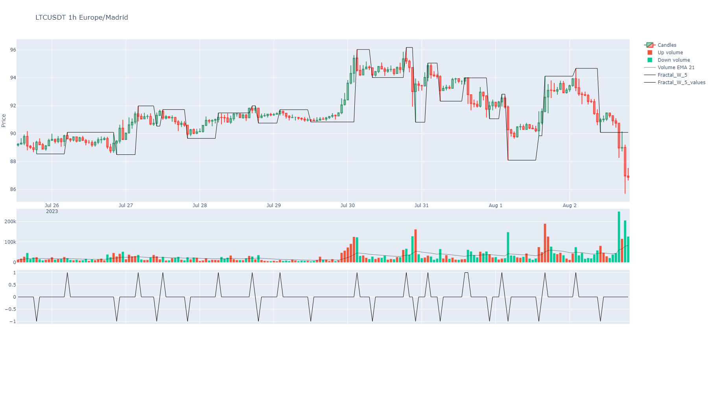
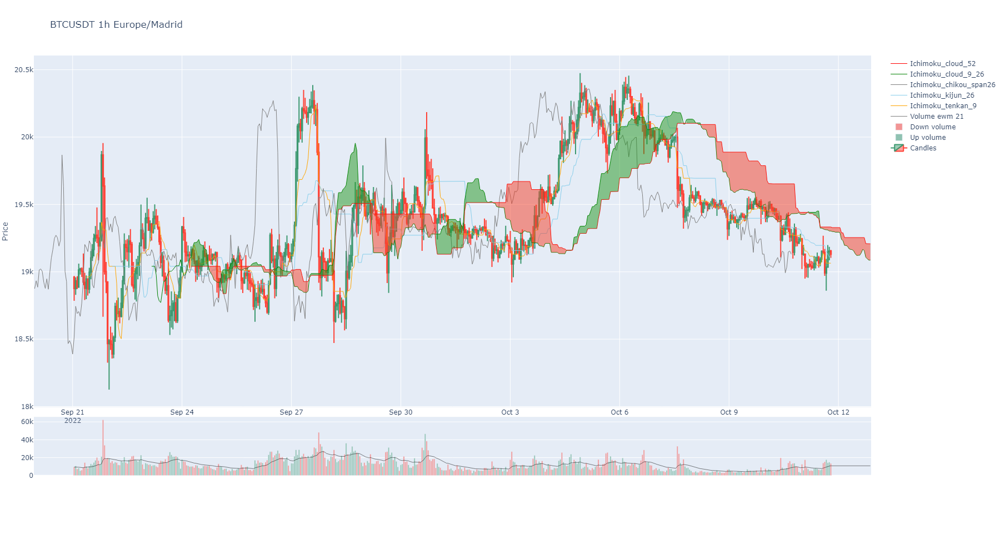
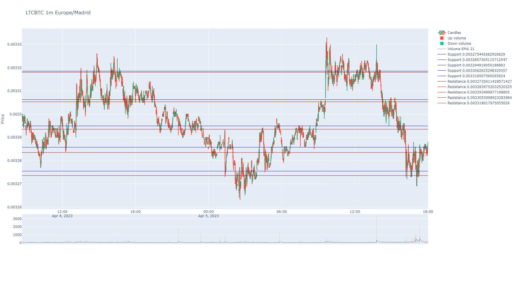
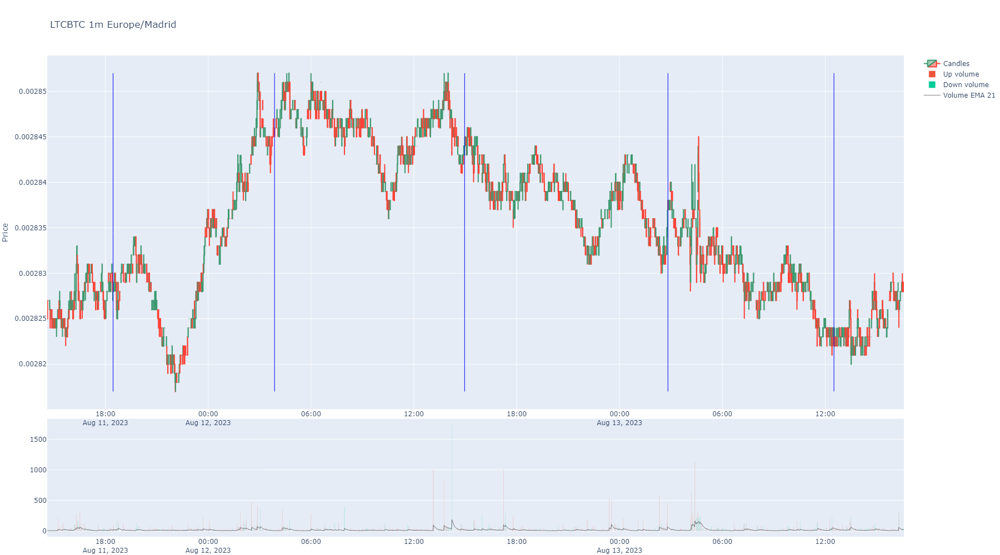

Indicators Module¶
BinPan own indicators and utils.
Functions:
|
Obtains the minim value for fractal_w periods as fractal is pure alternating max to mins. In other words, max and mins alternates |
|
Obtains the trend of the fractal_w indicator. |
|
Applies the fractal_trend_indicator function to the dataframe df for each index flagged with 1 in the flags series. |
|
The Ichimoku Cloud is a collection of technical indicators that show support and resistance levels, as well as momentum and trend direction. |
|
Kaufman's Efficiency Ratio based in: https://stackoverflow.com/questions/36980238/calculating-kaufmans-efficiency-ratio-in-python -with-pandas |
|
The fractal indicator is based on a simple price pattern that is frequently seen in financial markets. |
|
Calculates support and resistance levels based on volume and prices in the given dataframe. |
Calcula el número de valores que cada entrada en la serie supera hacia atrás hasta encontrar un valor superior o llegar al inicio de la serie. |
|
Calcula el número de valores que son superiores a cada entrada en la serie hacia atrás hasta encontrar un valor igual o menor o llegar al inicio de la serie. |
|
|
Calculate the rolling maximum and the steps back to the maximum for each point in the series. |
|
Calculate the rolling minimum and the steps back to the minimum for each point in the series. |
|
Splits a serie by values of other serie in four series by relative positions for plotting colored clouds with plotly. |
|
Splits a dataframe y sub dataframes to plot by colored areas. |
It zooms the cloud indicators in an index interval for a plot zoom. |
|
|
It shifts a candle ahead by the window argument value (or backwards if negative). |
|
It forward fills a value through nans while a window of candles ahead. |
|
Generate reversal candles for reversal charts: |
|
Optimized version of repeating prices by quantity for K-means clustering, with a comparison between 'Quantity' and 'Quote quantity' to choose the column with larger values for repeating prices. |
|
Generate initial centroids for K-means clustering with equally spaced values between min and max values in data. |
|
Find the optimal quantity of centroids for support and resistance methods using the elbow method. |
|
Calculate support and resistance levels for a given set of trades using K-means clustering. |
|
Calculate support and resistance levels merged for a given set of trades using K-means clustering. |
|
Repeat timestamps by quantity to give more importance to prices with more quantity. |
|
Calculate support and resistance levels timestamp centroids for a given set of trades using K-means clustering. |
Calculate the market profile for a given OHLC data. |
|
Calculate the ratio of taker and maker volume for a given OHLC data. |
|
|
Calculate the market profile for a given OHLC data. |
|
Calculate the market profile for a given trades data. |
|
Calcula POC, Value Area y nodos de alto/bajo volumen de un market profile. |
|
Average True Range using Wilder's smoothing (RMA). |
|
Supertrend indicator (Binance-compatible). |
|
Moving Average Convergence/Divergence. |
|
Stochastic RSI. |
|
On Balance Volume. |
|
Accumulation/Distribution line. |
|
Volume Weighted Average Price (cumulative over the full series). |
|
Commodity Channel Index. |
|
Ease of Movement. |
|
Rate of Change. |
|
Bollinger Bands. |
|
Stochastic Oscillator. |
- alternating_fractal_indicator(df: DataFrame, max_period: int = None, suffix: str = '') DataFrame | None[source]¶
- Obtains the minim value for fractal_w periods as fractal is pure alternating max to mins. In other words, max and mins alternates
in regular rhythm without any tow max or two mins consecutively.
- This custom indicator shows the minimum period in finding a pure alternating fractal. It is some kind of volatility in price
indicator, the most period needed, the most volatile price.
- Parameters:
- Return pd.DataFrame:
A dataframe with two columns, one with 1 or -1 for local max or local min to tag, and other with price values for that points. If not found, it will return None.

{kind=link}
- fractal_trend_indicator(df: DataFrame, period: int = None, fractal: DataFrame = None, suffix: str = '') tuple | None[source]¶
Obtains the trend of the fractal_w indicator. It will return maximums diff mean and minimums diff mean also in a tuple.
- Parameters:
- Return tuple:
Max min diffs mean and Min diffs mean.
- calculate_fractal_trend_on_flags(df: DataFrame, flags: Series, period: int = None, suffix: str = '') list[tuple][source]¶
Applies the fractal_trend_indicator function to the dataframe df for each index flagged with 1 in the flags series.
This function is designed to work with a DatetimeIndex.
- Parameters:
- Returns:
A list of tuples with the results of fractal_trend_indicator for each flagged index.
- ichimoku(data: DataFrame, tenkan: int = 9, kijun: int = 26, chikou_span: int = 26, senkou_cloud_base: int = 52, suffix: str = '') DataFrame[source]¶
The Ichimoku Cloud is a collection of technical indicators that show support and resistance levels, as well as momentum and trend direction. It does this by taking multiple averages and plotting them on a chart. It also uses these figures to compute a “cloud” that attempts to forecast where the price may find support or resistance in the future.
https://school.stockcharts.com/doku.php?id=technical_indicators:ichimoku_cloud
https://www.youtube.com/watch?v=mCri-FFvZjo&list=PLv-cA-4O3y97HAd9OCvVKSfvQ8kkAGKlf&index=7
- Parameters:
data (pd.DataFrame) – A BinPan Symbol dataframe.
tenkan (int) – The short period. It’s the half sum of max and min price in the window. Default: 9
kijun (int) – The long period. It’s the half sum of max and min price in the window. Default: 26
chikou_span (int) – Close of the next 26 bars. Util when spotting what happened with other ichimoku lines and what happened before Default: 26.
senkou_cloud_base – Period to obtain kumo cloud base line. Default is 52.
suffix (str) – A decorative suffix for the name of the column created.
- Return pd.DataFrame:
A pandas dataframe with columns as indicator lines.
import binpan sym = binpan.Symbol(symbol='LUNCBUSD', tick_interval='1m', limit=500) sym.ichimoku() sym.plot()

{kind=link}
- ker(close: Series, window: int) Series[source]¶
Kaufman’s Efficiency Ratio based in: https://stackoverflow.com/questions/36980238/calculating-kaufmans-efficiency-ratio-in-python -with-pandas
- Parameters:
close (pd.Series) – Close prices serie.
window (int) – Window to check indicator.
- Return pd.Series:
Results.
- fractal_w_indicator(df: DataFrame, period=2, merged: bool = True, suffix: str = '', fill_with_zero: bool = None) DataFrame[source]¶
The fractal indicator is based on a simple price pattern that is frequently seen in financial markets. Outside of trading, a fractal is a recurring geometric pattern that is repeated on all time frames. From this concept, the fractal indicator was devised. The indicator isolates potential turning points on a price chart. It then draws arrows to indicate the existence of a pattern.
- Parameters:
df (pd.DataFrame) – BinPan dataframe with High prices.
period (int) – Default is 2. Count of neighbour candles to match max or min tags.
merged (bool) – If True, values are merged into one pd.Serie. minimums overwrite maximums in case of coincidence.
suffix (str) – A decorative suffix for the name of the column created.
fill_with_zero (bool) – If true fills nans with zeros. Its better to plot with binpan.
- Return pd.DataFrame:
A dataframe with two columns, one with 1 or -1 for local max or local min to tag, and other with price values for that points.
- support_resistance_volume(df, num_bins=100, price_col='Close', volume_col='Volume', threshold=90) list[source]¶
Calculates support and resistance levels based on volume and prices in the given dataframe.
- Parameters:
df (pd.DataFrame) – The dataframe containing price and volume data.
num_bins (int) – Optional. The number of bins to use for accumulating volume. Default is 100.
price_col (str) – Optional. The name of the column containing price data. Default is ‘Close’.
volume_col (str) – Optional. The name of the column containing volume data. Default is ‘Volume’.
threshold (int) – Percentil to show most traded levels. Default is 90. The threshold variable filters the volume levels considered when calculating support and resistance levels. A higher threshold results in fewer levels, based on higher transaction volumes, while a lower threshold yields more levels, based on a broader range of transaction volumes.
- Return list:
A sorted list of support and resistance levels.
- count_smaller_values_backward(s: Series | list) Series[source]¶
Calcula el número de valores que cada entrada en la serie supera hacia atrás hasta encontrar un valor superior o llegar al inicio de la serie.
- Parameters:
s – Serie de pandas o lista de números.
- Returns:
Serie de pandas con el número de valores que cada entrada supera hacia atrás.
- count_larger_values_backward(s: Series | list) Series[source]¶
Calcula el número de valores que son superiores a cada entrada en la serie hacia atrás hasta encontrar un valor igual o menor o llegar al inicio de la serie.
- Parameters:
s – Serie de pandas o lista de números.
- Returns:
Serie de pandas con el número de valores que son superiores a cada entrada hacia atrás.
- rolling_max_with_steps_back(ser: Series, window: int, pct_diff: bool = True) -> (<class 'pandas.core.series.Series'>, <class 'pandas.core.series.Series'>)[source]¶
Calculate the rolling maximum and the steps back to the maximum for each point in the series.
Parameters: series (pd.Series): The time series of prices. window (int): The rolling window size. pct_result (bool): If True, the maximum values are returned as percentages instead of absolute values (default True).
Returns: pd.Series: A series of the rolling maximum values. pd.Series: A series indicating the number of steps back to the maximum value within the window.
- rolling_min_with_steps_back(ser: Series, window: int, pct_diff: bool = True) -> (<class 'pandas.core.series.Series'>, <class 'pandas.core.series.Series'>)[source]¶
Calculate the rolling minimum and the steps back to the minimum for each point in the series.
Parameters: series (pd.Series): The time series of prices. window (int): The rolling window size. pct_result (bool): If True, the minimum values are returned as percentages instead of absolute values (default True).
Returns: pd.Series: A series of the rolling minimum values. pd.Series: A series indicating the number of steps back to the minimum value within the window.
- split_serie_by_position(serie: Series, splitter_serie: Series, fill_with_zeros: bool = True) DataFrame[source]¶
Splits a serie by values of other serie in four series by relative positions for plotting colored clouds with plotly.
This means you will get 4 series with different situations:
serie is over the splitter serie.
serie is below the splitter serie.
splitter serie is over the serie.
splitter serie is below the serie.
- Parameters:
serie (pd.Series) – A serie to classify in reference to other serie.
splitter_serie (pd.Series) – A serie to split in two couple of series classified by position reference.
fill_with_zeros (bool) – Fill nans with zeros for splitted lines like MACD to avoid artifacts in plots.
- Return tuple:
A tuple with four series classified by upper position or lower position.
- df_splitter(data: DataFrame, up_column: str, down_column: str) list[source]¶
Splits a dataframe y sub dataframes to plot by colored areas.
- zoom_cloud_indicators(plot_splitted_serie_couples: dict, main_index: list, start_idx: int, end_idx: int) dict[source]¶
It zooms the cloud indicators in an index interval for a plot zoom.
- shift_indicator(serie: Series, window: int = 1) Series[source]¶
It shifts a candle ahead by the window argument value (or backwards if negative).
Just works with time indexes.
- Parameters:
serie (pd.Series) – A pandas Series.
window (int) – Times values are shifted ahead. Default is 1.
- Return pd.Series:
A series with index adjusted to the new shifted positions of values.
- ffill_indicator(serie: Series, window: int = 1) Series[source]¶
It forward fills a value through nans while a window of candles ahead.
- Parameters:
serie (pd.Series) – A pandas Series.
window (int) – Times values are shifted ahead. Default is 1.
- Return pd.Series:
A series with index adjusted to the new shifted positions of values.
- reversal_candles(trades: DataFrame, decimal_positions: int, time_zone: str, min_height: int = 7, min_reversal: int = 4) DataFrame[source]¶
- Generate reversal candles for reversal charts:
- Parameters:
trades (pd.Series) – A dataframe with trades sizes, side and prices.
decimal_positions (int) – Because this function uses integer numbers for prices, is needed to convert prices. Just steps are relevant.
time_zone (str) – A time zone like “Europe/Madrid”.
min_height (int) – Minimum candles height in pips.
min_reversal (int) – Maximum reversal to close the candles
- Return pd.DataFrame:
A serie with the resulting candles number sequence.
- Example:
import binpan ltc = binpan.Symbol(symbol='ltcbtc', tick_interval='5m', time_zone = 'Europe/Madrid', time_index = True, closed = True, hours=5) ltc.get_trades() ltc.get_reversal_candles() ltc.plot_reversal()

- repeat_prices_by_quantity(data: DataFrame, price_col='Price', qty_col='Quantity', alt_qty_col='Quote quantity') ndarray[source]¶
Optimized version of repeating prices by quantity for K-means clustering, with a comparison between ‘Quantity’ and ‘Quote quantity’ to choose the column with larger values for repeating prices.
- Parameters:
data (pd.DataFrame) – A pandas DataFrame with trades or klines, containing ‘Price’, ‘Quantity’, and optionally ‘Quote quantity’ columns.
price_col (str) – The name of the column containing price data. Default is ‘Price’.
qty_col (str) – The primary name of the column containing quantity data. Default is ‘Quantity’.
alt_qty_col (str) – The alternative name of the column containing quantity data to compare with qty_col. Default is ‘Quote quantity’.
- Return np.ndarray:
A numpy array with the prices repeated by the chosen quantity.
- kmeans_custom_init(data: ndarray, max_clusters: int) ndarray[source]¶
Generate initial centroids for K-means clustering with equally spaced values between min and max values in data. :param data: A data array. :param max_clusters: Max clusters expected. :return: A numpy array with initial centroids.
- find_optimal_clusters(KMeans_lib, data: ndarray, max_clusters: int, quiet: bool = False, initial_centroids: list | ndarray = None, sample_weight: ndarray = None) int[source]¶
Find the optimal quantity of centroids for support and resistance methods using the elbow method.
- Parameters:
KMeans_lib – A KMeans library to use.
data – A numpy array with the data to analyze.
max_clusters – Maximum number of clusters to consider.
quiet (bool) – If true, do not print progress bar.
initial_centroids (list) – Initial centroids to use optionally for faster results.
sample_weight (np.ndarray) – Optional sample weights for weighted KMeans.
- Returns:
The optimal number of clusters (centroids) as an integer.
- support_resistance_levels(df: DataFrame, max_clusters: int = 5, by_quantity: bool = None, by_klines=True, optimize_clusters_qty: bool = False) tuple[source]¶
Calculate support and resistance levels for a given set of trades using K-means clustering.

- Parameters:
df – A pandas DataFrame with trades or klines, containing a ‘Price’, ‘Quantity’ columns and a ‘Buyer was maker’ column, if trades passed, else “Close”, “Volume” and “Taker buy base volume”
max_clusters – Maximum number of clusters to consider for finding the optimal number of centroids. Default: 5.
by_quantity (float) – Count each price as many times the quantity contains a float of a the passed amount. Example: If a price 0.001 has a quantity of 100 and by_quantity is 0.1, quantity/by_quantity = 100/0.1 = 1000, then this prices is taken into account 1000 times instead of 1.
by_klines (bool) – If true, data is assumed to be klines.
optimize_clusters_qty (bool) – If true, find the optimal number of clusters to use for calculating support and resistance levels.
- Returns:
A tuple containing two lists: the first list contains the support levels, and the second list contains the resistance levels. Both lists contain float values.
{kind=link}
- support_resistance_levels_merged(df: DataFrame, by_klines: bool, max_clusters: int = 5, by_quantity: float = True, optimize_clusters_qty: bool = False)[source]¶
Calculate support and resistance levels merged for a given set of trades using K-means clustering.
Uses
sample_weightin KMeans instead of repeating prices, avoiding MemoryError with large volumes.- Parameters:
df – A pandas DataFrame with trades or klines, containing a ‘Price’, ‘Quantity’ columns or “Close”, “Volume”.
by_klines – If true, assume data is from klines.
max_clusters – Quantity of clusters to consider initially. Default: 5.
by_quantity – If true, use quantity to weight prices. It gives more importance to prices with more quantity.
optimize_clusters_qty – If true, find the optimal number of clusters to use for calculating support and resistance levels.
- Returns:
A list containing the support and resistance levels merged. It would be just levels.
- repeat_timestamps_by_quantity(df: DataFrame, epsilon_quantity: float, buy_maker: bool = None, buy_taker: bool = None, trades_col_from_kline: str = 'Trades') ndarray[source]¶
Repeat timestamps by quantity to give more importance to prices with more quantity. It detects if data is from trades or klines by column names.
- Parameters:
df – A pandas DataFrame with trades or klines, containing a ‘Price’, ‘Quantity’ columns or “Close”, “Volume” respectively.
epsilon_quantity – Quantity to repeat timestamps by.
buy_maker – If true, use maker side volume.
buy_taker – If true, use taker side volume.
trades_col_from_kline – If true, use taker side volume.
- Returns:
- time_active_zones(df: DataFrame, max_clusters: int = 5, simple: bool = True, by_quantity: float = True, quiet=False, optimize_clusters_qty: bool = False) tuple[source]¶
Calculate support and resistance levels timestamp centroids for a given set of trades using K-means clustering.
- Parameters:
df – A pandas DataFrame with trades or klines, containing a ‘Price’, ‘Quantity’ columns and a ‘Buyer was maker’ column, if trades passed, else “Close”, “Volume” and “Taker buy base volume”
max_clusters – Maximum number of clusters to consider for finding the optimal number of centroids. Default: 5.
simple (bool) – If true, use all trades to calculate time activity clusters.
by_quantity (float) – Count each price as many times the quantity contains a float of a the passed amount. Example: If a price 0.001 has a quantity of 100 and by_quantity is 0.1, quantity/by_quantity = 100/0.1 = 1000, then this prices is taken into account 1000 times instead of 1.
quiet (bool) – If true, do not print progress bar.
optimize_clusters_qty (bool) – If true, find the optimal number of clusters to use for calculating support and resistance levels.
- Returns:
A tuple containing two lists: the first list contains the support levels, and the second list contains the resistance levels. Both lists contain float values.

{kind=link}
- market_profile_from_klines_melt(df: DataFrame) DataFrame[source]¶
Calculate the market profile for a given OHLC data. The function calculates the average price for each candle (high + low + close) / 3, and then calculates the ‘maker’ and ‘taker’ volumes for each average price.
- Parameters:
df – A pandas DataFrame with the OHLC data. It should contain ‘High’, ‘Low’, ‘Close’, ‘Volume’, and ‘Taker buy base volume’ columns.
- Returns:
A pandas DataFrame grouped by the average price (‘Market_Profile’) with the sum of ‘Taker buy base volume’ and ‘Maker_Volume’ for each average price.
- taker_maker_profile_from_klines_melt(df: DataFrame) DataFrame[source]¶
Calculate the ratio of taker and maker volume for a given OHLC data.
- Parameters:
df – A pandas DataFrame with the OHLC data. It should contain ‘High’, ‘Low’, ‘Close’, ‘Volume’, and ‘Taker buy base volume’ columns.
- Returns:
A pandas DataFrame grouped by the average price (‘Market_Profile’) with the sum of ‘Taker buy base volume’ and ‘Maker_Volume’ for each average price.
- market_profile_from_klines_grouped(df: DataFrame, num_bins: int = 100) DataFrame[source]¶
Calculate the market profile for a given OHLC data. The function calculates the average price for each candle (high + low + close) / 3, and then calculates the ‘maker’ and ‘taker’ volumes for each average price.
- Parameters:
df – A pandas DataFrame with the OHLC data. It should contain ‘High’, ‘Low’, ‘Close’, ‘Volume’, and ‘Taker buy base volume’ columns.
num_bins (int) – Number of bins to use for the market profile.
- Returns:
A pandas DataFrame grouped by the average price (‘Market_Profile’) with the sum of ‘Taker buy base volume’ and ‘Maker_Volume’ for each average price.
- market_profile_from_trades_grouped(df: DataFrame, num_bins: int = 100) DataFrame[source]¶
Calculate the market profile for a given trades data. The function calculates the average price for each trade and then calculates the ‘maker’ and ‘taker’ volumes for each average price.
- Parameters:
df – A pandas DataFrame with the trades data. It should contain ‘Price’, ‘Quantity’, ‘Buyer was maker’ columns.
num_bins – The number of bins to use for the market profile.
- Returns:
A pandas DataFrame grouped by the average price (‘Price_Bin’) with the sum of ‘Taker buy base volume’ and ‘Maker buy base volume’ for each average price.
- value_area_from_profile(profile: DataFrame, value_area_pct: float = 0.7) dict | None[source]¶
Calcula POC, Value Area y nodos de alto/bajo volumen de un market profile.
A partir de un DataFrame de market profile (el que devuelven
market_profile_from_klines_groupedomarket_profile_from_trades_grouped:IntervalIndexde precio + columnas de volumen) calcula las metricas tipicas de un Volume Profile (VPVR):POC (Point of Control): el nivel de precio con mayor volumen, el gran iman.
Value Area (VAH/VAL): el rango de precios que concentra
value_area_pctdel volumen total, expandido desde el POC hacia el vecino con mas volumen en cada paso (algoritmo estandar).HVN / LVN (High/Low Volume Nodes): maximos/minimos locales del histograma. Los HVN actuan como soportes/resistencias por aceptacion; los LVN son huecos por donde el precio viaja rapido.
- Parameters:
profile (pd.DataFrame) – market profile con
IntervalIndexde precio. El volumen de cada bin es la suma de todas sus columnas numericas (taker + maker).value_area_pct (float) – fraccion del volumen total dentro de la Value Area. Por defecto 0.70.
- Returns:
dict con
poc,vah,val,value_area_pct,total_volume,bins(lista de{price, low, high, volume}),hvnylvn(listas de precios).Nonesi el perfil esta vacio.
Ejemplo:
prof = market_profile_from_klines_grouped(df=sym.df, num_bins=50) va = value_area_from_profile(prof, value_area_pct=0.70) print(va["poc"], va["vah"], va["val"])
- atr(high: Series, low: Series, close: Series, length: int = 14) Series[source]¶
Average True Range using Wilder’s smoothing (RMA).
- Parameters:
high (pd.Series) – High prices.
low (pd.Series) – Low prices.
close (pd.Series) – Close prices.
length (int) – Period. Default 14.
- Return pd.Series:
ATR values with column name
ATRr_{length}.
- supertrend(high: Series, low: Series, close: Series, length: int = 10, multiplier: float = 3.0) DataFrame[source]¶
Supertrend indicator (Binance-compatible).
- macd(close: Series, fast: int = 12, slow: int = 26, signal: int = 9) DataFrame[source]¶
Moving Average Convergence/Divergence.
- stoch_rsi(close: Series, rsi_length: int = 14, stoch_length: int = 14, k_smooth: int = 3, d_smooth: int = 3) DataFrame[source]¶
Stochastic RSI.
- obv(close: Series, volume: Series) Series[source]¶
On Balance Volume.
- Parameters:
close (pd.Series) – Close prices.
volume (pd.Series) – Volume.
- Return pd.Series:
OBV values.
- ad(high: Series, low: Series, close: Series, volume: Series) Series[source]¶
Accumulation/Distribution line.
- Parameters:
high (pd.Series) – High prices.
low (pd.Series) – Low prices.
close (pd.Series) – Close prices.
volume (pd.Series) – Volume.
- Return pd.Series:
AD values.
- vwap(high: Series, low: Series, close: Series, volume: Series) Series[source]¶
Volume Weighted Average Price (cumulative over the full series).
- Parameters:
high (pd.Series) – High prices.
low (pd.Series) – Low prices.
close (pd.Series) – Close prices.
volume (pd.Series) – Volume.
- Return pd.Series:
VWAP values.
- cci(high: Series, low: Series, close: Series, length: int = 14, c: float = 0.015) Series[source]¶
Commodity Channel Index.
- eom(high: Series, low: Series, volume: Series, length: int = 14, divisor: int = 100000000) Series[source]¶
Ease of Movement.
- bbands(close: Series, length: int = 5, std: float = 2.0, ddof: int = 0) DataFrame[source]¶
Bollinger Bands.